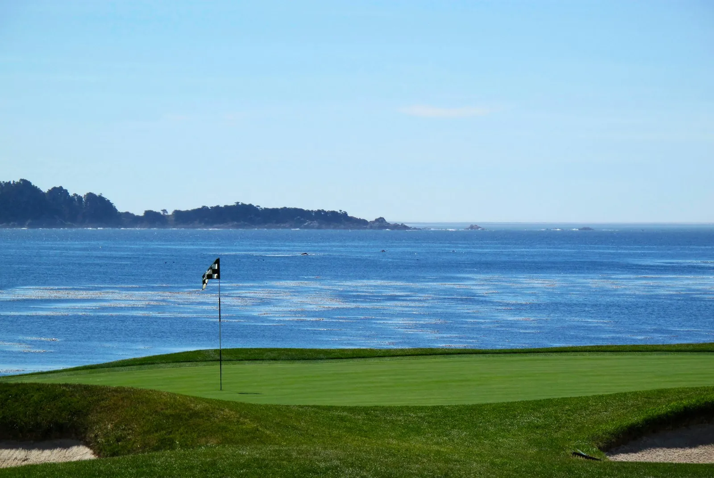

Top 5 prestigious public courses in California
· By GoldenPath Guide Editorial TeamCalifornia has more famous public golf than any other American state. The five courses below sit on ocean cliffs, Monterey forest, and desert foothills, and each one has hosted professional tournaments or national championships. All five sell tee times to the public, so any golfer can play them with enough planning. I have walked four of the five, and the gap between reading about them and standing on the first tee is larger than you expect.
Public does not mean cheap here. The most famous names charge resort-level green fees, and weekend mornings sell out far ahead. The payoff is real: these are the same fairways the professionals walk each year, kept in tournament shape through most of the season. What follows is a straight ranking by prestige, with honest notes on difficulty and planning.
1. Pebble Beach Golf Links, Pebble Beach
Pebble Beach opened in 1919 on the Monterey Peninsula from a design by Jack Neville and Douglas Grant. Six U.S. Opens have been played here, in 1972, 1982, 1992, 2000, 2010, and 2019, and the AT&T Pebble Beach Pro-Am visits every February. The routing runs out along Carmel Bay and back through Del Monte forest, and holes 4 through 10 play almost entirely along the water.
The 7th is the famous short par 3, barely 100 yards from the regular tees but fully exposed to wind off the bay. The 18th is one of the great closing holes in golf, a long par 5 with the ocean down the entire left side. Walking the last three holes at dusk, with seals audible on the rocks below, is the single best finish in American public golf in my view.
- Tee times open first to guests staying at the resort, and outside play is generally released closer to the date, so read the official booking page for the current window.
- Caddies are available and common here, though carts are restricted, and walking with a caddie is the classic way to play it.
- February tournament week closes or limits public play, while late spring and early fall bring the calmest scoring weather.
- Bring one more layer than the forecast suggests, because the bay wind runs 10 to 15 degrees colder than inland Monterey.
2. Spyglass Hill Golf Course, Pebble Beach
Spyglass Hill sits inside the same Del Monte forest, a few minutes from Pebble Beach, and it was designed by Robert Trent Jones Sr. and opened in 1966. It shares the AT&T Pro-Am rotation, and many low-handicap players call it the harder test of the two. The first five holes run through dunes toward the sea, then the course turns inland into pine forest for a completely different back stretch.

The course demands straight driving from the first tee onward, and the par 4s in the forest are long enough that mid-handicap golfers should move up at least one tee box. Greens run firm and fast in tournament season. My honest take: if Pebble is the round you tell people about, Spyglass is the round you think about on the flight home.
3. Torrey Pines South, La Jolla
Torrey Pines is a city-owned municipal facility on the bluffs of La Jolla, just north of San Diego, and the South course is its championship layout. Rees Jones remodeled it for the 2008 U.S. Open, it hosted again in 2021, and the Farmers Insurance Open plays here every winter. From the back tees it stretches past 7,600 yards, which makes tee selection the entire round.
San Diego residents pay far less than visitors and book through an earlier window, so visitors should set an alarm for the moment their window opens. The North course next door, renovated by Tom Weiskopf in 2016, makes an excellent second day. Our full course guide covers both layouts hole by hole.
4. PGA West Stadium Course, La Quinta
The Stadium Course at PGA West was designed by Pete Dye and opened in 1986 in the desert near Palm Springs. Dye built it as a stadium venue with deep bunkers, railroad ties, and the famous island-green 17th called Alcatraz. It has hosted PGA Tour events and the final stage of Q-School, and it remains one of the toughest resort courses in the country.
Desert golf here is target golf: forced carries, clear bail-out sides, and almost no rough to save you. Winter is high season with warm days and cool nights, while summer rounds cost far less but start at sunrise to beat triple-digit heat. Play it early in a trip, because the golf swings you find here carry over well to the rest of the desert courses.
5. Pasatiempo Golf Club, Santa Cruz
Pasatiempo was designed by Alister MacKenzie and opened in 1929 in the hills above Santa Cruz, and MacKenzie made his home beside the 6th fairway. It is the same architect behind Augusta National and Cypress Point, and the back nine at Pasatiempo shows his hand clearly in the bunkering and green contours. The club operates as a semi-private facility with public tee times bookable in advance.

The course climbs and falls across a canyon, so expect uneven lies on nearly every full shot. Green fees run well below Pebble Beach levels, which makes it the best value on this list for architecture fans. Pair it with a Monterey trip, since Santa Cruz sits about 45 minutes up the coast from Pebble Beach by car.
How to choose among the five
Base the choice on where you sleep, not just what you want to play. Pebble Beach and Spyglass Hill belong to a Monterey Peninsula trip, Torrey Pines belongs to San Diego, PGA West belongs to Palm Springs, and Pasatiempo fits a Santa Cruz or San Francisco leg. California drives are long, and crossing regions for a single round burns a full day.
Match the course to your handicap honestly. High-handicap golfers get more joy from Pasatiempo or the Torrey North than from the Stadium Course tees all the way back. Single-digit players should play Pebble Beach and Spyglass Hill from the tournament-adjacent tees at least once, because that is the test everyone talks about.
Booking order that works
- Lock the hardest tee time first, which is usually Pebble Beach or a Torrey Pines weekend morning.
- Book lodging around that anchor date, inside the resort where a stay helps with access.
- Add the second and third courses once the anchor round is confirmed.
- Recheck every confirmation one week out, since tournament and maintenance schedules shift seasonally.
- Keep one flex morning open for a replay or a local municipal course, which is often the most relaxed round of the trip.
Five rounds, five regions, one state. Play them in any order, but play Pebble Beach last if you can. Nothing else on the list follows it well.
Pebble Beach Golf Links
Torrey Pines: South & North
PGA West Stadium
Best Public Golf Courses California